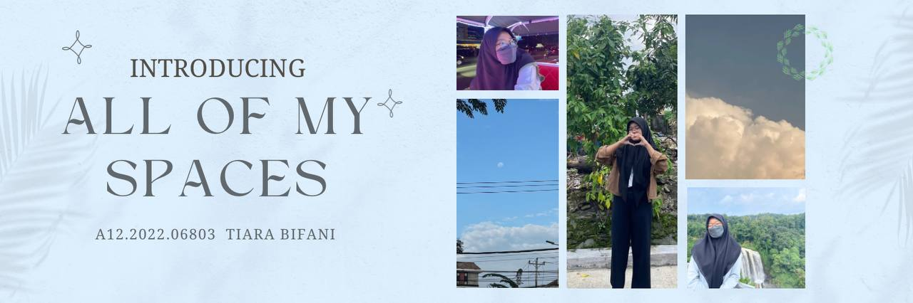
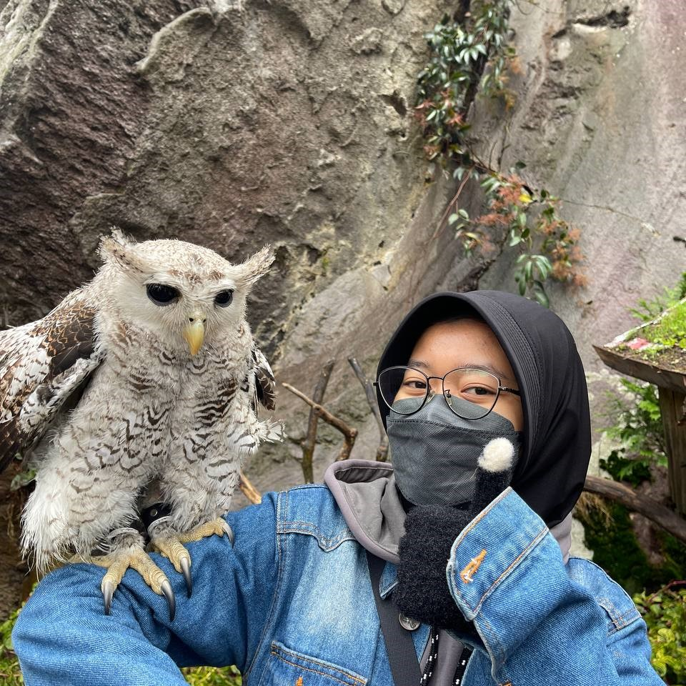

Selamat datang di jendela ke dalam hidup saya! Di sini, saya berbagi potongan kepribadian, kisah inspiratif, dan refleksi tentang perjalanan saya. Mari kita temukan kedekatan melalui pengalaman yang saya bagikan. Pada halaman beranda ini, saya akan menceritakan hal seru tentang saya! Diantaranya adalah hobi saya, penyanyi favorit saya, dan mungkin sedikit cerita tentang kehidupan sehari-hari saya?
Okelah kalau begitu, berikut ini saya akan menceritakan semuanya!
Selamat datang di dunia keindahan dan harmoni yang saya temukan dalam dua hobi saya yang tak tergantikan: memotret langit dan mendengarkan musik. Dalam setiap momen ketika langit membuka dirinya dengan keajaiban warna dan bentuk, saya merasa terhubung dengan kebesaran alam semesta. Dari gemerlap bintang hingga permainan awan yang dramatis, kamera saya adalah jendela ke dunia langit yang menakjubkan. Sementara itu, musik adalah sahabat setia dalam perjalanan kreatif saya. Dengan setiap melodi, saya merasakan emosi yang meluap-luap dan cerita yang tak terucapkan. Dari melodi yang mendayu hingga irama yang menggugah semangat, setiap nada adalah langkah yang membawa saya lebih dekat pada keselarasan dan keindahan. Dengan gabungan kedua hobi ini, saya menciptakan narasi visual dan auditif yang memukau. Setiap foto langit yang saya ambil adalah kisah yang dipenuhi dengan pesan dan makna, sementara musik menjadi latar yang sempurna untuk mengiringi perjalanan pencitraan saya. Bersama-sama, kedua hobi ini menginspirasi saya untuk melihat keindahan di sekitar saya dengan mata yang lebih dalam dan hati yang lebih terbuka.
Tiba-tiba, semesta K-Pop memperoleh warna yang lebih berarti sejak pertama kali saya terjatuh ke dalam pesona boyband luar biasa, EXO. Mereka bukan hanya sekedar penyanyi dan penari; mereka adalah sumber inspirasi, semangat, dan kegembiraan bagi saya. Setiap ketukan lagu mereka, setiap gerakan koreografi yang anggun, membawa saya ke dunia yang penuh keajaiban dan emosi yang tak terlupakan. Ketika saya mendengarkan musik mereka, saya merasakan getaran dari tiap nada, seperti energi yang memenuhi setiap sel dalam tubuh saya. Musik mereka adalah pelipur lara yang mengangkat semangat saya di saat-saat sulit dan menambah keceriaan di hari-hari bahagia. Tak hanya itu, visual mereka seperti lukisan hidup yang menghipnotis mata saya; keanggunan dan daya tarik yang tak terbantahkan memancar dari setiap penampilan mereka. Gaya mereka tidak hanya memikat, tetapi juga memancarkan keunikan dan keberanian. Saya selalu terkesima oleh keberanian mereka untuk berinovasi dalam penampilan mereka, memperlihatkan kepada dunia bahwa keberagaman adalah kecantikan sejati. Namun, di antara semua anggota yang luar biasa, ada satu yang secara khusus berhasil merebut hati saya, yaitu Ooh Sehun. Dari senyumnya yang memikat hingga keanggunan dalam setiap gerakan, dia adalah personifikasi dari semua yang saya kagumi. Bagi saya, EXO bukan sekadar boyband; mereka adalah teman setia yang menemani setiap langkah hidup saya. Dengan setiap lagu yang mereka nyanyikan, setiap penampilan yang mereka bawakan, saya merasa dihubungkan dengan sesuatu yang jauh lebih besar dari diri saya sendiri. Bersama EXO, saya merasa memiliki keluarga besar di mana saya dapat mengekspresikan diri sepenuhnya dan merasakan cinta yang tak terbatas.
Saat itu, langit biru cerah memeluk perjalanan saya ke Wonosobo, sebuah kota indah di pegunungan Jawa Tengah. Semangat petualangan mengalir dalam diri saya, menggetarkan setiap sel di tubuh saya, karena saya tahu bahwa perjalanan ini akan menjadi pengalaman yang tak terlupakan. Sesampainya di Wonosobo, udara segar dan sejuk menyambut kedatangan saya. Perbukitan hijau yang menghampar luas memberikan pemandangan yang menenangkan dan mempesona. Saya merasa seakan terhubung dengan alam di sini, di tengah hamparan keindahan yang memukau. Mengelilingi kota kecil ini, saya menemukan keajaiban alam yang menakjubkan. Danau yang tenang, pepohonan hijau yang rimbun, dan aroma segar dari pegunungan membuat hati saya merasa damai. Saat matahari terbenam, langit di Wonosobo berubah menjadi lukisan alam yang memukau; warna-warni senja merayakan keindahan yang tiada tara. Tak hanya keindahan alamnya, tetapi juga keramahan penduduk setempat yang membuat perjalanan ini menjadi istimewa. Saya disambut dengan senyuman hangat dan keramahan yang tulus di setiap sudut kota. Berinteraksi dengan mereka, saya belajar banyak tentang budaya dan tradisi lokal, merasakan kedalaman dan kekayaan yang dimiliki oleh masyarakat Wonosobo. Tetapi tentu saja, perjalanan tidak selalu mulus. Ada momen-momen tantangan yang membuat saya merasa hidup, seperti melalui jalanan berkelok-kelok di pegunungan atau menavigasi cuaca yang berubah-ubah. Namun, setiap rintangan itu adalah bagian dari petualangan, menguatkan saya dan membuat saya lebih menghargai keindahan setiap detik yang saya habiskan di sini. Saat saya meninggalkan Wonosobo, saya membawa pulang kenangan yang tak terlupakan dan hati yang penuh dengan rasa syukur. Perjalanan ini telah mengisi jiwa saya dengan keindahan alam, kehangatan manusia, dan pelajaran hidup yang berharga. Dan saya tahu, meskipun telah berpisah dengan kota ini, tetapi bagian dari Wonosobo akan selalu tinggal di hati saya.
| Hari | Jam | Ruang | Mata Kuliah |
|---|---|---|---|
| Senin | 18.30 - 21.00 | H.3.1 | Perencanaan Sumber Daya Perusahaan |
| Selasa | 18.30 - 21.00 | H.3.11 | Perencanaan Strategis Sistem Informasi |
| Rabu |
08.40 - 10.20 12.30 - 14.10 18.30 - 21.00 |
H.4.6 H.5.10 H.3.11 |
Pemrograman WEB Analisa dan Perancangan Sistem Informasi II Manajemen Rantai Pasok |
| Kamis |
08.40 - 10.20 10.20 - 12.00 12.30 - 14.10 |
Kulino D.2.B D.2.K |
Bahasa Indonesia Pemrograman WEB Pemrograman Berorientasi Objek |
| Jumat |
07.00 - 08.40 08.40 - 10.20 |
H.3.9 H.3.9 |
Analisa dan Perancangan Sistem Informasi Pemrograman Berorientasi Objek |
|  |
NIM : A12.2022.06803
Nama : Tiara Bifani
Jenis Kelamin : Perempuan
Tempat, tanggal lahir : Grobogan, 1 April 2004
Asal Sekolah : SMAN 1 Gubug
Alamat tempat tinggal : Gubug, Grobogan, Jawa Tengah
E-mail : 112202206803@mhs.dinus.ac.id
|